Pour commencer ce chapitre sur les capteurs, j’ai rassemblé un petit nombre de capteurs qui sont très utilisés en robotique et en domotique. Vous pourrez ainsi comprendre certains concepts généraux tout en ayant accès à une base de connaissance qui puisse vous aider lorsque vous aurez besoin de mettre en place vos projets personnels. On va commencer en douceur avec les capteurs logiques, aussi appelés Tout Ou Rien (TOR). Puis on continuera vers les capteurs utilisant des transducteurs à résistance de sortie variable. On verra ensuite des capteurs un peu particuliers puis pour finir des capteurs un peu compliqués. C’est parti !
Sommaire
Tout Ou Rien, un capteur qui sait ce qu’il veut
On va donc commencer par voir quelques capteurs dont la sortie est un état logique qui indique un état : Ouvert ou Fermé . Ces capteurs sont appelés des capteur Tout Ou Rien, capteurs logiques ou encore capteurs à rupture de tension .
Deux états
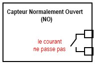
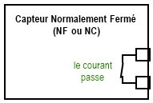
Lorsque le capteur est dit ouvert (ou open en anglais), le courant ne passe pas entre ses bornes.
S’il s’agit de la position de repos , c’est à dire lorsque le capteur ne capte pas la grandeur qu’il doit capter, on dit alors que le capteur a un contact de type Normalement Ouvert (ou Normally Open en anglais). Tandis que si le capteur est dit fermé (ou close en anglais), le courant peut passer entre ses bornes. S’il s’agit cette fois de sa position de repos, alors on dit qu’il possède un contact Normalement Fermé (ou Normally Closed ).
J’ai schématisé les contacts par des interrupteurs reliés à deux bornes (les carrés à droite) du capteur. C’est le principe d’un capteur TOR (Tout Ou Rien), mais ce n’est pas forcément des interrupteurs qu’il y a dedans, on va le voir bientôt.
Le capteur ILS ou Interrupteur à Lames Souples
Le principe du TOR
Une question qui vous est peut-être passée par la tête : mais comment ce capteur peut mesurer une grandeur physique avec seulement deux états en sortie ? C’est assez facile à comprendre.
Imaginons, dans le cadre d’un de vos projets personnels, que vous ayez l’intention de faire descendre les volets électriques lorsqu’il fait nuit. Vous allez alors avoir recours à un capteur de luminosité qui vous donnera une image, par une autre grandeur physique, de l’intensité lumineuse mesurée. Hors, vous ne voulez pas que ce capteur vous dise s’il fait un peu jour ou un peu nuit, ou entre les deux… Non, il vous faut une réponse qui soit OUI ou NON il fait nuit. Vous aurez donc besoin d’un capteur TOR. Alors, il en existe qui sont capables de donner une réponse TOR, mais lorsque l’on utilisera un transducteur, on devra gérer ça nous même avec Arduino et un peu d’électronique.
Champ magnétique
Ne prenez pas peur, je vais simplement vous présenter le capteur ILS qui utilise le champ magnétique pour fonctionner.
 En effet, ce capteur, est un capteur TOR qui détecte la présence de champ magnétique. Il est composé de deux lames métalliques souples et sensibles au champ magnétique.
En effet, ce capteur, est un capteur TOR qui détecte la présence de champ magnétique. Il est composé de deux lames métalliques souples et sensibles au champ magnétique.
Lorsqu’un champ magnétique est proche du capteur, par exemple un aimant, eh bien les deux lames se mettent en contact et laissent alors passer le courant électrique. D’une façon beaucoup plus simple, c’est relativement semblable à un interrupteur mais qui est actionné par un champ magnétique. Photo d’un interrupteur ILS et image, extraites du site Wikipédia :
{kind=link}
Dès que l’on approche un aimant, à partir d’un certain seuil de champ magnétique, le capteur agit. Il devient alors un contact fermé et reprend sa position de repos, contact NO, dès que l’on retire le champ magnétique. Ce type de capteur est très utilisé en sécurité dans les alarmes de maison. On les trouve essentiellement au niveau des portes et fenêtres pour détecter leur ouverture.
Câblage
Le câblage de ce capteur peut être procédé de différentes manières. On peut en effet l’utiliser de façon à ce que le courant ne passe pas lorsque rien ne se passe, ou bien qu’il ne passe pas lorsqu’il est actionné.
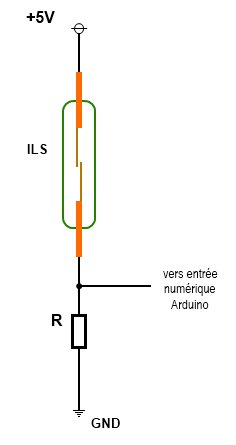
- Dans le premier cas, la sortie vaut HIGH quand l’ILS est au repos et LOW lorsqu’il est actionné par un champ magnétique.
- Sur la deuxième image, le câblage est différent et fait en sorte que la sortie soit à LOW lorsque le contact ILS est au repos et passe à HIGH dès qu’il est actionné par un champ magnétique.
Un petit programme tout simple qui permet de voir si l’ILS est actionné ou non, selon le schéma utilisé :
const char entree_ils = 2; // utilisation de la broche numérique numéro 2 comme entrée pour le capteur ILS
const char led_indication = 13; // utilisation de la LED de la carte pour indiquer si l'ILS est activé ou non
unsigned char configuration_ils = 0; // ou 1, dépend du câblage de l'ILS selon les schémas précédents
/*
0 pour le premier schéma (gauche)
1 pour le deuxième schéma (droite)
*/
void setup()
{
// définition des broches utilisées
pinMode(entree_ils, INPUT);
pinMode(led_indication, OUTPUT);
}
void loop()
{
if(configuration_ils) // si c'est le deuxième schéma
{
// la LED est éteinte lorsque l'ILS est au repos
digitalWrite(led_indication, digitalRead(entree_ils));
}
else // si c'est le premier schéma
{
// la LED est allumée lorsque l'ILS est au repos
digitalWrite(led_indication, !digitalRead(entree_ils));
}
}
Capteur logique prêt à l’emploi
Bon, là ça va être très très court, puisque vous savez déjà faire ! Les capteurs tout prêts que l’on peut acheter dans le commerce et qui fournissent un état de sortie logique (LOW ou HIGH) sont utilisables tels quels.
Il suffit de connecter la sortie du capteur sur une entrée numérique de la carte Arduino et de lire dans le programme l’état sur cette broche. Vous saurez donc en un rien de temps ce que le capteur indique. On peut citer pour exemple les capteurs de mouvements.
Le programme précédent, utilisé avec l’ILS, est aussi utilisable avec un capteur logique quelconque. Après, à vous de voir ce que vous voudrez faire avec vos capteurs.
Capteurs à résistance de sortie variable
La photo-résistance
Nous y voilà, on va enfin voir le transducteur dont j’arrête pas de vous parler depuis tout à l’heure : la photo-résistance ! Je vois que vous commenciez à être impatients.

Petit aperçu
La photo-résistance est un composant électronique qui est de type transducteur. Il est donc capable de donner une image de la grandeur physique mesurée, la lumière ou précisément la luminosité, grâce à une autre grandeur physique, la résistance.

On trouve généralement ce composant en utilisation domotique, pour… devinez quoi ?! … faire monter ou descendre les volets électriques d’une habitation ! :P
Mais on peut également le retrouver en robotique, par exemple pour créer un robot suiveur de ligne noire. Enfin on le trouve aussi dans beaucoup d’autres applications, vous saurez trouver vous-mêmes où est-ce que vous l’utiliserez, je vous fais confiance de ce point de vue là.
Propriété
La photo-résistance suit une relation toute simple entre sa résistance et la luminosité :
- la résistance en Ohm ( )
- l’intensité lumineuse en lux (lx)
Plus l’intensité lumineuse est élevée, plus la résistance diminue. À l’inverse, plus il fait sombre, plus la résistance augmente.
Malheureusement, les photo-résistances ne sont pas des transducteurs très précis. Ils ont notamment des problèmes de linéarité, un temps de réponse qui peut être élevé et une grande tolérance au niveau de la résistance. Nous les utiliserons donc pour des applications qui ne demandent que peu de rigueur. Ce qui ira bien pour ce qu’on veut en faire.

Une photorésistance est une résistance qui possède une valeur de base en Ohm. C’est à dire qu’elle est calibrée pour avoir une valeur, par exemple 47 kOhm, à un certain seuil de luminosité. À ce seuil on peut donc mesurer cette valeur, suivant la tolérance qu’affiche la photo-résistance. Si la luminosité augmente, la résistance de base n’est plus vraie et chute. En revanche, dans le noir, la résistance augmente bien au delà de la résistance de base.
Génial !! J’en veux, j’en veux ! Comment on l’utilise ?

La photorésistance est principalement utilisée dans un montage en pont diviseur de tension. Vous le connaissez ce montage, c’est exactement le même principe de fonctionnement que le potentiomètre. Sauf que ce ne sera pas vous qui allez modifier le curseur mais la photorésistance qui, selon la luminosité, va donner une valeur ohmique différente. Ce qui aura pour effet d’avoir une influence sur la tension en sortie du pont diviseur.
Rappel sur le pont diviseur de tension
Je vous rappelle le montage d’un pont diviseur de tension :
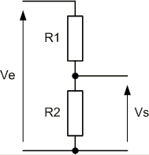
La formule associée est la suivante :
Cette formule s’applique uniquement dans le cas où la sortie Vs ne délivre pas de courant (cas des entrées numériques ou analogiques d’un microcontrôleur par exemple). Dans le cas où il y a justement un courant qui sort de ce pont, cela modifie la valeur de la tension de sortie. C’est comme si vous rajoutiez une résistance en parallèle de la sortie. Cela a donc pour effet de donner un résistance R2 équivalente plus faible et donc de changer la tension (en appliquant la formule).
Reprenons le tableau présentant quelques exemples :
| Schéma équivalent | Position du curseur | Tension sur la broche C |
|---|---|---|
| 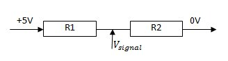 | Curseur à la moitié | |

|
Curseur à 25% du départ | |
| 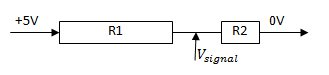 | Curseur à 75% du départ |
Vous allez donc maintenant comprendre pourquoi je vais vous donner deux montages pour une utilisation différente de la photorésistance…
Utilisation n°1
Ce premier montage, va être le premier capteur que vous allez créer ! Facile, puisque je vous fais tout le travail. :P Le principe de ce montage réside sur l’utilisation que l’on va faire de la photo-résistance.
Comme je vous le disais à l’instant, on va l’utiliser dans un pont diviseur de tension. Exactement comme lorsque l’on utilise un potentiomètre. Sauf que dans ce cas, c’est l’intensité lumineuse qui va faire varier la tension en sortie. Voyez plutôt :
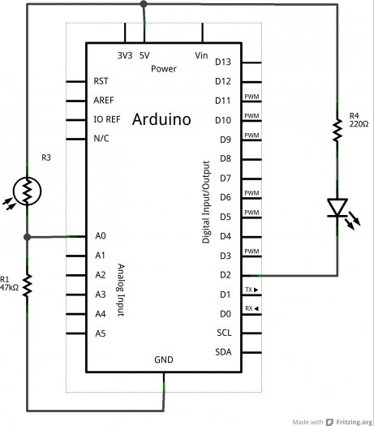
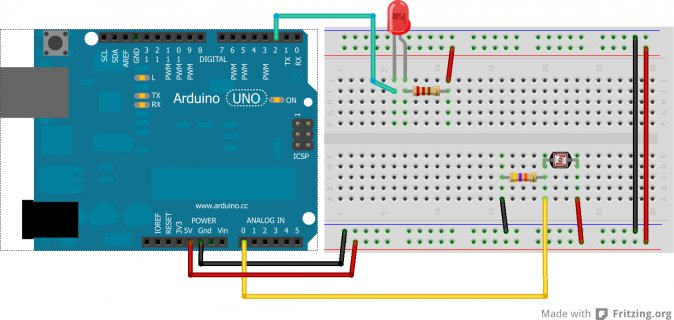
On calibre le pont diviseur de tension de manière à ce qu’il soit "équitable" et divise la tension d’alimentation par 2 en sa sortie. Ainsi, lorsque la luminosité fluctuera, on pourra mesurer ces variations avec la carte Arduino. Avec ce montage, plus l’intensité lumineuse est élevée, plus la tension en sortie du pont sera élevée à son tour. Et inversement, plus il fais sombre, moins la tension est élevée.
Utilisation n°2
Tandis que là, c’est l’effet inverse qui va se produire : plus il y aura de lumière, moins il y aura de tension en sortie du pont . Et plus il fera sombre, plus la tension sera élevée.
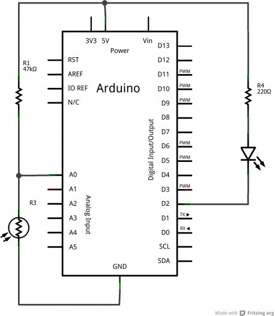

Rien de bien sorcier. Il suffit de bien comprendre l’intérêt du pont diviseur de tension.
Un peu de programmation
Et si vous aviez un réveil, qui ne vous donne pas l’heure ? Fort utile, n’est-ce pas !
Non, sérieusement, il va vous réveiller dès que le jour se lève… ce qui fait que vous dormirez plus longtemps en hiver. C’est vos profs qui vont pas être contents !
Vous n’aurez qu’à dire que c’est de ma faute.

Bon allez, un peu de tenue quand même, je ne voudrais pas être la cause de votre échec scolaire. Cette fois, vraiment sérieusement, nous allons faire un tout petit programme qui va simplement détecter la présence ou l’absence de lumière. Lorsque la tension en sortie du pont diviseur de tension créée avec la photorésistance et la résistance fixe chute, c’est que la luminosité augmente. À vous de choisir le schéma correspondant suivant les deux présentés précédemment. Pour commencer, on va initialiser les variables et tout le tralala qui va avec.
const char led = 2; // Une LED pour indiquer s'il fait jour
const char capteur = 0; // broche A0 sur laquelle va être connecté le pont diviseur de tension
float tension = 0; // variable qui va enregistrer la tension lue en sortie du capteur
float seuilObscurite = 1.5; // valeur en V, seuil qui détermine le niveau auquel l'obscurité est présente
void setup()
{
// définition des broches utilisées
pinMode(led, OUTPUT);
Serial.begin(9600); // la voie série pour monitorer
}
Qu’allons-nous retrouver dans la fonction
loop()
? Eh bien avant tout il va falloir lire la valeur présente en entrée de la broche analogique A0. Puis, on va calculer la tension correspondante à la valeur lue. Enfin, on va la comparer au seuil préalablement défini qui indique le niveau pour lequel l’absence de lumière fait loi.
void loop()
{
// conversion de cette valeur en tension
tension = (analogRead(capteur) * 5.0) / 1024;
if(tension >= seuilObscurite)
{
digitalWrite(led, LOW); // On allume la LED
}
else
{
digitalWrite(led, HIGH); // On éteint la LED
}
// envoie de la valeur de la tension lue
// vers l'ordinateur via la liaison série
Serial.print("Tension = ");
Serial.print(tension);
Serial.println(" V");
// délai pour ne prendre des mesures que toutes les demi-secondes
delay(500);
}
Un programme plus évolué
Après tant de difficulté (
 ), voici un nouveau programme qui vous sera peut-être plus intéressant à faire. En fait ça le deviendra dès que je vous aurais dit l’application qui en est prévue…
), voici un nouveau programme qui vous sera peut-être plus intéressant à faire. En fait ça le deviendra dès que je vous aurais dit l’application qui en est prévue…
Préparation
Cette fois, je vais vous demander d’avoir deux photorésistances identiques. Le principe est simple on va faire une comparaison entre les deux valeurs retournées par les deux capteurs (deux fois le montage précédent).
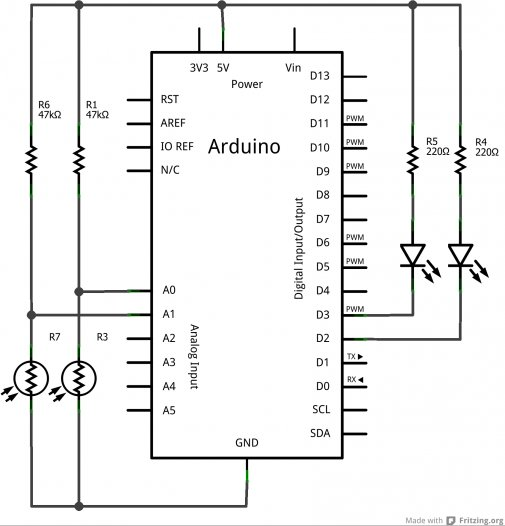
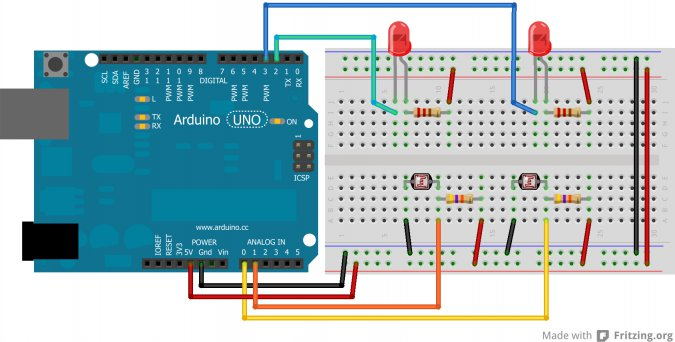
Si la valeur à droite est plus forte, on allumera une LED en broche 2. Sinon, on allume en broche 3. Si la différence est faible, on allume les deux. Dans tous les cas, il n’y a pas de cas intermédiaire. C’est soit à gauche, soit à droite (selon la disposition des photorésistances).
Ce principe pourrait être appliqué à un petit robot mobile avec un comportement de papillon de nuit. Il cherche la source de lumière la plus intense à proximité.
Le programme
Il parle de lui même, pas besoin d’en dire plus.
// déclaration des broches utilisées
const char ledDroite = 2;
const char ledGauche = 3;
const char capteurDroit = 0;
const char capteurGauche = 1;
/* deux variables par capteur qui une stockera la valeur lue sur la broche analogique
et l'autre stockera le résultat de la conversion de la précédente valeur en tension */
float lectureDroite = 0;
float lectureGauche = 0;
float tensionDroite = 0;
float tensionGauche = 0;
void setup()
{
pinMode(ledDroite, OUTPUT);
pinMode(ledGauche, OUTPUT);
Serial.begin(9600);
}
void loop()
{
// lecture de la valeur en sortie du capteur capteurDroit puis gauche
lectureDroite = analogRead(capteurDroit);
lectureGauche = analogRead(capteurGauche);
// conversion en tension de la valeur lue
tensionDroite = (lectureDroite * 5.0) / 1024;
tensionGauche = (lectureGauche * 5.0) / 1024;
// si la tension lue en sortie du capteur 1 est plus grande
// que celle en sortie du capteur 2
if(tensionDroite > tensionGauche)
{
digitalWrite(ledDroite, LOW); // allumée
digitalWrite(ledGauche, HIGH); // éteinte
}
else
{
digitalWrite(ledDroite, HIGH); // éteinte
digitalWrite(ledGauche, LOW); // allumée
}
// envoi des données lues vers l'ordinateur
Serial.print("Tension Droite = ");
Serial.print(tensionDroite);
Serial.println(" V");
Serial.print("Tension Gauche = ");
Serial.print(tensionGauche);
Serial.println(" V");
delay(100); // délai pour ne prendre une mesure que toutes les 100ms
}
J’en parlais donc brièvement, ce petit programme peut servir de cerveau à un petit robot mobile qui cherchera alors la source de lumière la plus intense à ses "yeux". Vous n’aurez plus qu’à remplacer les LED par une commande de moteur (que l’on verra dans la prochaine partie sur les moteurs) et alimenter le tout sur batterie pour voir votre robot circuler entre vos pattes.
Bien entendu ce programme pourrait largement être amélioré !
Un autre petit robot mobile
On peut renverser la situation pour faire en sorte que le robot suive une ligne noire tracée au sol. C’est un robot suiveur de ligne. Le principe est de "coller" les deux "yeux" du robot au sol.
L’état initial va être d’avoir un œil de chaque côté de la ligne noire. Le robot avance tant qu’il voit du blanc (car la ligne noire est sur une surface claire, blanche en général). Dès qu’il va voir du noir (lorsque la luminosité aura diminué), il va alors arrêter de faire tourner le moteur opposé à l’œil qui a vu la ligne noire. Ainsi, le robot va modifier sa trajectoire et va continuer en suivant la ligne.
À partir de cela, je vous laisse réfléchir à tout ce que vous pouvez faire. Non pas de programme donné tout frais, je viens de définir un cahier des charges, somme toute, assez simple. Vous n’avez donc plus qu’à le suivre pour arriver à vos fins.
Capteurs à tension de sortie variable
Passons à un capteur un petit peu plus amusant et plus étonnant, dont les applications sont très variées !
L’élément piézoélectrique
Sous ce nom peu commun se cache un phénomène physique très intéressant. L’élément piézoélectrique, que l’on retrouve dans divers objets du quotidien (montres, certains briquets, raquettes de tennis, …) présente en effet toute une panoplie de caractéristiques utilisées dans des dizaines voire centaines de domaines. Nous allons voir tout ça en détail. Nous, ce qui va nous intéresser pour le moment, c’est sa propriété à capter des sons.
{kind=link}
Constitution
Avant de parler de son fonctionnement, voyons un peu sa constitution.
Prenons les éléments piézoélectriques de la première image, à gauche. On observe qu’ils se trouvent sous une forme de pastille composée de plusieurs couches. Généralement c’est une pastille de céramique qui est montée sur une pastille métallique. La fabrication de ces éléments étant très complexe, nous en resterons à ce niveau d’approche.
Propriété
J’ai trouvé amusant de voir sur internet que l’on parlait de sa propriété principale comme étant analogue à celle d’une éponge. Je ne vous épargnerais donc pas cet exemple.
Dès qu’on met une éponge en contact avec de l’eau, elle l’absorbe. Tandis que lorsqu’on la presse, elle se vide de l’eau qu’elle a absorbée. Le rapport avec l’élément piézoélectrique ? Eh bien il agit un peu de la même manière.
Un élément piézoélectrique, lui, subit un phénomène semblable : dès qu’on lui admet une contrainte mécanique, il génère une tension électrique. En revanche, dès qu’on lui administre une tension électrique, il génère alors une contrainte mécanique, restituée par exemple sous forme sonore.
{kind=link}
Un exemple d’utilisation dont vous ne vous doutez certainement pas, c’est l’utilisation de cette propriété dans certaines raquettes de tennis. L’élément piézoélectrique se trouve dans le manche de la raquette. Lorsqu’une balle frappe la raquette, elle génère une contrainte mécanique sur l’élément piézoélectrique qui en retour génère une tension électrique. Cette tension est récupérée et injectée à nouveau dans l’élément piézoélectrique qui génère alors une contrainte mécanique opposée à celle générée par la balle. Vous me suivez ? L’intérêt ? Réduire les vibrations causées par le choc et ainsi améliorer la stabilité de la raquette (et de la frappe) tout en réduisant le "stress" provoqué sur le poignet du joueur. Dingue non ?
Utilisation
L’utilisation que nous allons faire de cet élément va nous permettre de capter un choc. Cela peut être un "toc" sur une porte, une déformation de surface, voire même une onde sonore un peu puissante. Ce capteur délivre directement une tension proportionnelle à la contrainte mécanique qu’on lui applique. Il s’agit donc d’un capteur actif. Nous pouvons donc l’utiliser sans rien en le connectant directement avec Arduino.
Montage
Vous allez procéder au montage suivant en respectant le schéma de câblage :
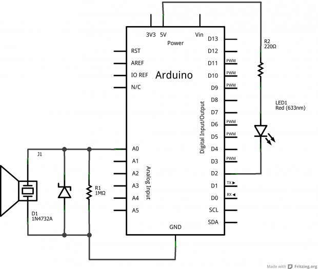

La résistance de en parallèle de l’élément piézoélectrique permet d’éviter les courants trop forts qui peuvent être générés par l’élément piézoélectrique.
Il est accompagné par une diode un peu particulière que l’on appelle une diode zener. Cette dernière sert à éviter les surtensions. Si jamais la tension générée par le piezo dépasse son seuil (4.7V en l’occurence), elle deviendra passante et le courant ira donc vers la masse plutôt que dans le microcontrôleur (évitant ainsi de griller l’entrée analogique). Cette dernière n’est pas indispensable mais fortement conseillée.
Programme
Le programme que nous allons associer à ce montage, et qui va être contenu dans la carte Arduino, va exploiter la tension générée par l’élément piézoélectrique, lorsqu’on lui administrera une contrainte mécanique, pour allumer ou éteindre une LED présente en broche 2 de la carte Arduino. On pourra s’en servir pour détecter un événement sonore tel que le toc sur une porte.
La condition pour que l’élément piézoélectrique capte correctement le toc d’une porte est qu’il doit être positionné sur la porte de façon à ce que sa surface soit bien plaquée contre elle. Aussi nous utiliserons la liaison série pour indiquer la tension produite par l’élément piézoélectrique.
C’est un petit plus, par forcément utile mais qui vous donnera une idée de la force qu’il faut pour générer une tension particulière. Vous en trouverez certainement une application utile.
Allez, un peu de programmation !
Fonction setup()
Au début du programme nous déclarons quelques variables que nous utiliserons par la suite. Aussi nous amorçons l’utilisation de la liaison série et des broches utilisées de la carte Arduino.
const char led = 2; // utilisation de la LED en broche 2 de la carte
const char piezo = 0; // l'élément piézoélectrique est connecté en broche analogique 0
const int seuil_detection = 100;
/* on peut définir le seuil de détection qui va simplement
permettre de confirmer que c'est bien un évènement sonore suffisant et non parasite */
Petite parenthèse par rapport au seuil. Ici il est configuré de façon à être comparé à la lecture directe de la valeur en broche analogique (comprise entre 0 et 1023). Mais on peut aussi le définir pour qu’il soit comparé au calcul de la tension en sortie du capteur (par exemple le mettre à 1, pour 1V).
float lecture_capteur = 0; // variable qui va contenir la valeur lue en broche analogique 0
float tension = 0; // variable qui va contenir le résultat du calcul de la tension
int etat_led = LOW; // variable utilisée pour allumer ou éteindre la LED à chaque "Toc"
void setup()
{
pinMode(led, OUTPUT); // déclaration de la broche 2 en sortie
Serial.begin(9600); // utilisation de la liaison série
}
Fonction principale
Étant donné que le code est plutôt court et simple, nous le laisserons dans la seule fonction loop() plutôt que de le découper en plusieurs petites fonctions. Cependant libre à vous de l’agencer autrement selon vos besoins.
void loop()
{
// lecture de la valeur en sortie du capteur
lecture_capteur = analogRead(piezo);
// conversion de cette valeur en tension
tension = (lecture_capteur * 5.0) / 1024;
if (lecture_capteur >= seuil_detection)
{
// on modifie l'état de la LED pour le passer à son état opposé
etat_led = !etat_led;
// application du nouvel état en broche 2
digitalWrite(led, etat_led);
// envoi vers l'ordinateur, via la liaison série,
// des données correspondant au Toc et à la tension
Serial.println("Toc !");
Serial.print("Tension = ");
Serial.print(tension);
Serial.println(" V");
}
}
Ici pas de délai à la fin de la boucle. En effet, si vous mettez un délai (qui est bloquant) vous risqueriez de rater des "toc" puisque cet événement est bref et imprévisible. Si jamais vous tapiez sur votre élément piézoélectrique au moment où le programme est dans la fonction
delay()
, vous ne pourriez pas l’intercepter.
Seuil de tension
Comme je le disais, il est aussi possible et non pas idiot de changer le seuil pour qu’il soit comparé en tant que tension et non valeur "abstraite" comprise entre 0 et 1023. Cela relève de la simplicité extrême, voyez plutôt :
// utilisation de la LED en broche 2 de la carte
const char led = 2;
// l'élément piézoélectrique est connecté en broche analogique 0
const char piezo = 0;
// seuil de détection en tension et non plus en nombre entre 0 et 1023
const float seuil_detection = 1.36;
// variable qui va contenir la valeur lue en broche analogique 0
float lecture_capteur = 0;
// variable qui va contenir le résultat du calcul de la tension
float tension = 0;
// variable utilisée pour allumer ou éteindre la LED à chaque "Toc"
int etat_led = LOW;
void setup()
{
pinMode(led, OUTPUT); // déclaration de la broche 2 en sortie
Serial.begin(9600); // utilisation de la liaison série
}
void loop()
{
// lecture de la valeur en sortie du capteur
lecture_capteur = analogRead(piezo);
// convestion de cette valeur en tension
tension = (lecture_capteur * 5.0) / 1024;
if (tension >= seuil_detection) // comparaison de deux tensions
{
// on modifie l'état de la LED pour le passer à son état opposé
etat_led = !etat_led;
// application du nouvel état en broche 2
digitalWrite(led, etat_led);
// envoi vers l'ordinateur, via la liaison série,
// des données correspondant au Toc et à la tension
Serial.println("Toc !");
Serial.print("Tension = ");
Serial.print(tension);
Serial.println(" V");
}
}
Je n’ai modifié que le type de la variable
seuil_detection
.
La réversibilité de l’élément piézoélectrique
Tout à l’heure je vous disais que l’élément piézoélectrique était capable de transformer une contrainte mécanique en une tension électrique. Je vous ai également parlé du "phénomène éponge" en vous disant que l’on pouvait aussi bien absorber que restituer non pas de l’eau comme l’éponge mais une contrainte mécanique à partir d’une tension électrique. On va donc s’amuser à créer du son avec l’élément piézoélectrique ! :P
Faire vibrer l’élément piézoélectrique !
Attention tout de même, bien que vous l’aurez très certainement compris, il n’est plus question d’utiliser l’élément piézoélectrique en entrée comme un capteur, mais bien en sortie comme un actionneur.
Tout d’abord, il vous faudra brancher l’élément piézoélectrique. Pour cela, mettez son fil noir à la masse et son fil rouge à une broche numérique, n’importe laquelle. Pas besoin de résistance cette fois-ci. Et voilà les branchements sont faits ! Il ne reste plus qu’à générer un signal pour faire vibrer l’élément piézoélectrique. Selon la fréquence du signal, la vibration générée par l’élément piézoélectrique sera plus ou moins grave ou aiguë. Essayons simplement avec ce petit programme de rien du tout (je ne vous donne que la fonction loop(), vous savez déjà tout faire
) :
void loop()
{
digitalWrite(piezo, HIGH);
delay(5);
digitalWrite(piezo, LOW);
delay(5);
}
Ce code va générer un signal carré d’une période de 10ms, soit une fréquence de 100Hz. C’est un son plutôt grave. Vous pouvez aisément changer la valeur contenue dans les délais pour écouter les différents sons que vous allez produire. Essayez de générer un signal avec la PWM et soyez attentif au résultat en changeant la valeur de la PWM avec un potentiomètre par exemple.
Une fonction encore toute prête
Maintenant, si vous souhaitez générer ce signal et en même temps faire d’autres traitements, cela va devenir plus compliqué, car le temps sera plus difficile à maîtriser (et les délais ne sont pas toujours les bienvenus :P ).
Pour contrer cela, nous allons confier la génération du signal à une fonction d’Arduino qui s’appelle
tone()
.
Cette fonction prend en argument la broche sur laquelle vous voulez appliquer le signal ainsi que la fréquence dudit signal à réaliser. Si par exemple je veux émettre un signal de 440Hz (qui correspond au "la" des téléphones) je ferais :
tone(piezo, 440);
. Le son va alors devenir permanent, c’est pourquoi, si vous voulez l’arrêter, il vous suffit d’appeler la fonction
noTone()
qui va alors arrêter la génération du son sur la broche spécifiée en argument.
La fonction
tone()
peut prendre un troisième argument qui spécifie en millisecondes la durée pendant laquelle vous désirez jouer le son, vous évitant ainsi d’appeler
noTone()
ensuite.
Pour les plus motivés d’entre vous, vous pouvez essayer de jouer une petite mélodie avec l’élément piézoélectrique.
 Ah les joies nostalgiques de l’époque des sonneries monophoniques
.
Ah les joies nostalgiques de l’époque des sonneries monophoniques
.
Étalonner son capteur
Faisons une petite pause dans notre découverte des capteurs pour parler d’un problème qui peut arriver à tout le monde… Comment faites-vous si vous possédez un capteur mais ne possédez pas sa caractéristique exacte ? Comment feriez-vous pour faire correspondre une valeur analogique lue avec une donnée physique réelle ?
Par exemple, si je vous donne un composant en vous disant "Hey, te voilà un capteur de température, je sais qu’il s’alimente en 5V sur telle et telle broches, je sais que le signal de sortie est une tension en fonction de la température mais je suis incapable de te dire quelle est la caractéristique (la courbe tension en fonction de la température)".
Nous allons maintenant voir comment résoudre ce problème en voyant une méthode pour étalonner son capteur. Nous allons ainsi nous même déterminer la courbe caractéristique du capteur et déterminer son coefficient liant la température et la tension. À la fin, je vous donnerais la vraie courbe constructeur et nous pourrons comparer nos résultats pratiques avec ceux de référence
.
Le capteur utilisé
Pour étudier la méthode que je vous propose ici, nous allons utiliser un capteur de température assez répandu qui se nomme "LM35". Il existe dans différents boîtiers que voici :
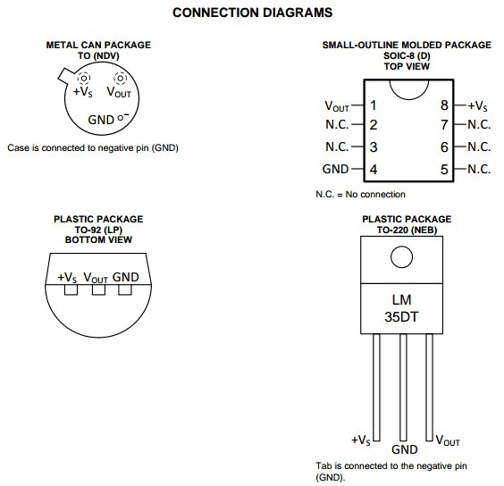
Vous aurez deviné le branchement, il est assez simple. Il suffit de relier +VS au 5V et GND à la masse. Le signal sera ensuite lu sur la broche Vout.
La méthode
La méthode pour caractériser le capteur est assez simple. À l’aide d’une multitude de mesures et d’un appareil témoin, nous allons pouvoir créer un tableau qui nous servira à calculer la courbe (à l’aide d’un logiciel comme Excel par exemple). Pour cela, en plus de votre capteur vous aurez besoin d’un appareil de mesure "témoin" qui vous servira de référence. Par exemple le bon vieux thermomètre qui traîne accroché à votre fenêtre fera parfaitement l’affaire
.
Prise de mesures
Vous êtes prêts, alors allons-y, commençons à travailler. Reliez le capteur à l’Arduino et l’Arduino à l’ordinateur, de la manière la plus simple possible, comme ceci par exemple :
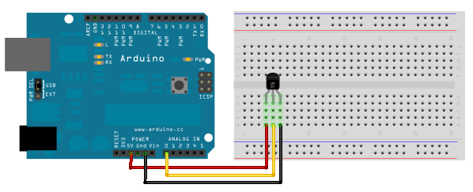
Ensuite, nous devons récupérer les données envoyées par le capteur de manière régulière (ou rajoutez un bouton et faite des envois lors de l’appui
). Pour cela, voici un petit programme sans difficulté qui vous enverra les valeurs brutes ou converties en volts toutes les demi-secondes.
const int capteur = 0; // capteur branché sur la pin analogique 0
float tension = 0.0;
int valeur = 0;
void setup()
{
Serial.begin(9600);
}
void loop()
{
valeur = analogRead(capteur);
tension = (valeur*5.0)/1024;
Serial.print("Tension : ");
Serial.print(tension);
Serial.println(" V");
Serial.print("Valeur : ");
Serial.println(valeur);
Serial.println("---------------------");
delay(500);
}
Maintenant que tout est prêt, il nous faut un banc de test. Pour cela, préparez une casserole avec de l’eau contenant plein de glaçons (l’eau doit être la plus froide possible). Faites une première mesure avec votre capteur plongé dedans (attention, les broches doivent être isolées électriquement ou alors mettez l’ensemble dans un petit sac plastique pour éviter que l’eau n’aille faire un court-circuit). Faites en même temps une mesure de la température réelle observée à l’aide du thermomètre. Une fois cela fait, relevez ces mesures dans un tableau qui possédera les colonnes suivantes :
- Température réelle (en °C)
- Tension selon Arduino (en V)
- Valeur brute selon Arduino
Quand la première mesure est faite, commencez à faire réchauffer l’eau (en la plaçant sur une plaque de cuisson par exemple). Continuez à faire des mesures à intervalle régulier (tous les 5 degrés voire moins par exemple). Plus vous faites de mesure, plus l’élaboration de la courbe finale sera précise. Voici à titre d’exemple le tableau que j’ai obtenu :
| Température (°C) | Tension (V) | Valeur CAN |
|---|---|---|
| 2 | 0,015 | 3 |
| 5 | 0,054 | 11 |
| 10 | 0,107 | 22 |
| 16 | 0,156 | 32 |
| 21 | 0,210 | 43 |
| 24 | 0,234 | 48 |
| 29 | 0,293 | 60 |
| 35 | 0,352 | 72 |
| 38 | 0,386 | 79 |
| 43 | 0,430 | 88 |
| 46 | 0,459 | 94 |
| 50 | 0,503 | 103 |
Réalisation de la caractéristique
Lorsque vous avez fini de prendre toutes vos valeurs, vous allez pouvoir passer à l’étape suivante qui est :
Calculer la caractéristique de votre courbe !! Sortez vos cahiers, votre calculatrice et en avant ! … Non je blague (encore que ça ferait un super TP), on va continuer à utiliser notre logiciel tableur pour faire le travail pour nous ! On va donc commencer par regarder un peu l’allure de la courbe.
Je vais en faire deux, une symbolisant les valeurs brutes de la conversion du CAN (entre 0 et 1023) en rouge et l’autre qui sera l’image de la tension en fonction de la température en bleu. Nous pourrons alors déterminer deux caractéristiques, selon ce qui vous arrange le plus.
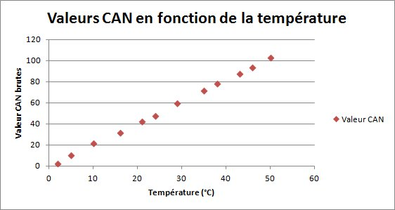

Une fois cela fait, il ne reste plus qu’à demander gentiment au logiciel de graphique de nous donner la courbe de tendance réalisée par ces points. Sous Excel, il suffit de cliquer sur un des points du graphique et choisir ensuite l’option "Ajouter une courbe de tendance…".
Vous aurez alors le choix entre différents types de courbe (linéaire, exponentielle…). Ici, on voit que les points sont alignés, il s’agit donc d’une équation de courbe linéaire, de type . Cochez la case "Afficher l’équation sur le graphique" pour pouvoir voir et exploiter cette dernière ensuite.
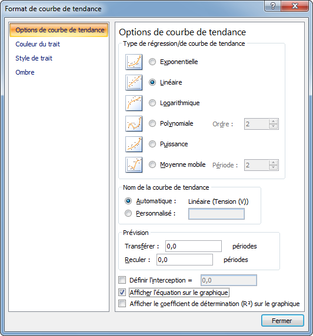
Voici alors ce que l’on obtient lorsque l’on rajoute notre équation :
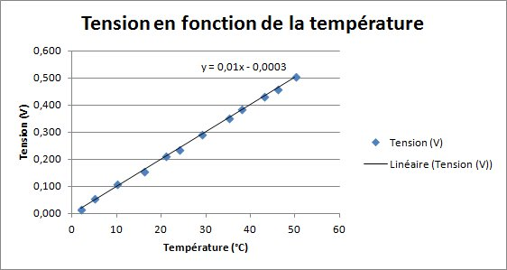
Grâce à l’équation, nous pouvons déterminer la relation liant la température et la tension (ou les valeurs du CAN). Ici nous obtenons :
- (pour la tension)
- (pour les valeurs du CAN)
Le coefficient constant (-0.003 ou -0.0707) peut ici être ignoré. En effet, il est faible (on dit
négligeable
) comparé aux valeurs étudiées. Dans les équations,
représente la température et
représente la tension ou les valeurs du CAN. On lit donc l’équation de la manière suivante : Tension en Volt égale 0,01 fois la température en degrés Celsius. Ce qui signifie que dorénavant, en ayant une mesure du CAN ou une mesure de tension, on est capable de déterminer la température en degrés Celsius
Super non ? Par exemple, si nous avons une tension de 300mV, avec la formule trouvée précédemment on déterminera que l’on a
, ce qui équivaut à
. On peut aisément le confirmer via le graphique
Maintenant j’ai trois nouvelles, deux bonnes et une mauvaise… La bonne c’est que vous êtes capable de déterminer la caractéristique d’un capteur. La deuxième bonne nouvelle, c’est que l’équation que l’on a trouvé est correcte… … parce qu’elle est marquée dans
la documentation technique
qui est super facile à trouver
(ça c’était la mauvaise nouvelle, on a travaillé pour rien !! ) Mais comme c’est pas toujours le cas, c’est toujours bien de savoir comment faire
Adaptation dans le code
Puisque nous savons mesurer les valeurs de notre capteur et que nous avons une équation caractéristique, nous pouvons faire le lien en temps réel dans notre application pour faire une utilisation de la grandeur
physique
de notre mesure. Par exemple, s’il fait 50°C nous allumons le ventilateur. En effet, souvenez-vous, avant nous n’avions qu’une valeur entre 0 et 1023 qui ne signifiait physiquement pas grand chose. Maintenant nous sommes en mesure (oh oh oh
) de faire la conversion. Il faudra pour commencer récupérer la valeur du signal. Prenons l’exemple de la lecture d’une tension analogique du capteur précédent :
int valeur = analogRead(monCapteur); // lit la valeur
Nous avons ensuite deux choix, soit nous le transformons en tension puis ensuite en valeur physique grâce à la caractéristique du graphique bleu ci-dessus, soit nous transformons directement en valeur physique avec la caractéristique rouge. Comme je suis fainéant, je vais chercher à économiser une instruction en prenant la dernière solution. Pour rappel, la formule obtenue était : . Nous avions aussi dit que le facteur constant était négligeable, on a donc de manière simplifiée soit "la température est égale à la valeur lue divisé par 2.056 ( ). Nous n’avons plus qu’à faire la conversion dans notre programme !
float temperature = valeur/2.056;
Et voilà ! Si l’on voulait écrire un programme plus complet, on aurait :
int monCapteur = 0; // Capteur sur la broche A0;
int valeur = 0;
float temperature = 0.0;
void setup()
{
Serial.begin(9600);
}
void loop()
{
valeur = analogRead(monCapteur);
temperature = valeur/2.056;
Serial.println(temperature);
delay(500);
}
Et si jamais notre coefficient constant n’est pas négligeable ?
Eh bien prenons un exemple ! Admettons qu’on obtienne la caractéristique suivante : . On pourrait lire ça comme "ma valeur lue par le CAN est égale à 10 fois la valeur physique plus 22". Si on manipule l’équation pour avoir en fonction de , on aurait :
Dans le code, cela nous donnerait :
void loop()
{
valeur = analogRead(monCapteur);
temperature = (valeur-22)/10;
Serial.println(temperature);
delay(500);
}